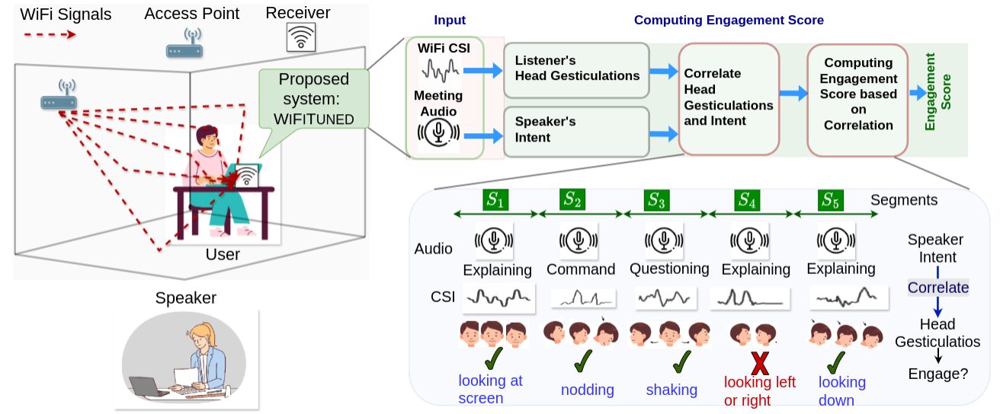
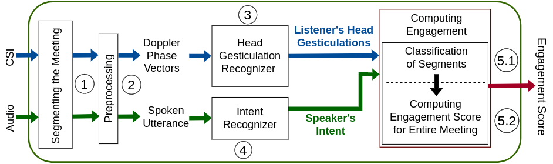

Resources
Abstract
We propose a multi-modal, non-intrusive, and privacy-preserving system WiFiTuned1 for assessing a behavioral proxy of engagement of users during synchronous online meetings. It uses two sensing modalities, i.e., WiFi Channel State Information (CSI) and audio, captured over the meeting device (such as a laptop) to assess engagement-related behavioral cues without using any visual information. At its core, WiFiTuned detects the head gestures of the users through WiFi CSI and detects the speaker’s intent through audio. Then, it correlates the two modalities to infer the behavioral proxy of the users’ engagement. We evaluate WiFiTuned with 22 users. It infers this behavioral proxy with an average accuracy of > 86%. The developed head gesticulation recognition model adapts to different users’ positions, locations, and environments by obtaining a classification accuracy of 91.68%. From a thorough usability study of the developed platform, we observed that WiFiTuned attains an average usability score of 80.72% on the system usability scale (SUS), indicating overall adaptability for real-world usage.
Publications
Overview

Architecture

Citation
@inproceedings{10.1145/3577190.3614108,
author = {Singh, Vijay Kumar and Kar, Pragma and Sohini, Ayush Madhan and Rangaiah, Madhav and Chakraborty, Sandip and Maity, Mukulika},
title = {WiFiTuned: Monitoring Engagement in Online Participation by Harmonizing WiFi and Audio},
year = {2023},
isbn = {9798400700552},
publisher = {Association for Computing Machinery},
address = {New York, NY, USA},
url = {https://doi.org/10.1145/3577190.3614108},
doi = {10.1145/3577190.3614108},
booktitle = {Proceedings of the 25th International Conference on Multimodal Interaction},
pages = {670–678},
numpages = {9},
keywords = {WiFi sensing, engagement detection, multimodal fusion},
location = {Paris, France},
series = {ICMI '23}
}